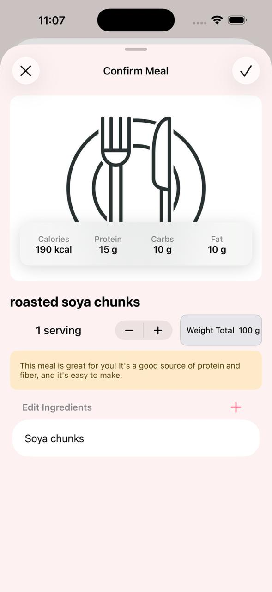
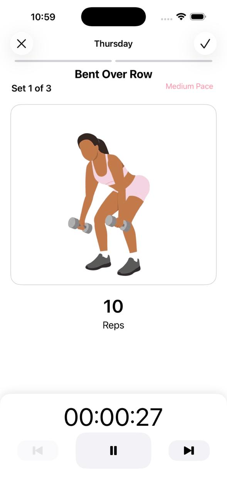
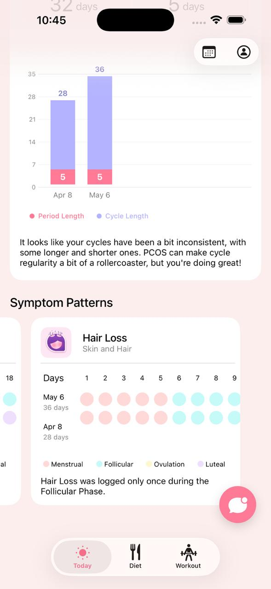

Built by student developers to make women's healthcare more affordable, accessible, and personalized.
PCOS affects millions of women worldwide, yet managing it often means juggling multiple apps, conflicting advice, and having little understanding of how daily habits affect symptoms.
As a team of student developers, we wanted to build something different. We designed Cyster to help users understand the deep connection between their daily routines and hormonal health.
"Our mission is simple: Make women's healthcare more accessible, more understandable, and more affordable."
Tracking meals and GI index to stabilize blood sugar.
Selecting routines that align with your current energy levels.
Monitoring resting patterns and fatigue correlation.
Logging cramps, acne, and bloating to note trends.
Adapting daily habits dynamically based on your cycle day.
We welcome feedback from women, intersex people, and anyone who menstruates or experiences hormone-related health concerns. Even if you don't have PCOS, your feedback helps us build a better product for everyone.
Get personalized logs and tailored cycle/nutrition tips specifically for managing PCOS symptoms.
Track your symptoms and trends to gather clear data you can share with healthcare professionals.
Understand your cycle phases—Menstrual, Follicular, Ovulation, Luteal—and adapt your routines.
Form sustainable daily habits around nutrition, targeted exercises, and consistent sleep hygiene.
Join as a beta tester and help shape a free health platform designed to benefit everyone.
Try out the app on your device today. Since we are in active beta, downloading is simple using official testing channels.
Download Apple's official TestFlight app from the App Store.
Download TestFlightOpen our public beta invitation link on your iOS device.
Join TestFlight BetaTap Accept within the TestFlight application.
Tap Install to download Cyster to your device. You are ready to go!
Register using our Firebase App Distribution testing signup link.
Register for Android BetaOur student team will approve your email registration shortly.
You will receive an invitation email containing the installation link.
Install the App Tester app, accept the invite, and download Cyster.
Cyster is still under active development by student builders. Current limitations include:
Some AI features are experimental: Conversations are highly localized, and meal suggestions are recommendations that do not substitute for professional medical advice.
Cycle prediction improves over time: Cycle regularity analysis requires logs across multiple months to adjust to your body's specific baseline.
Wearable integrations are expanding: Fitness tracking relies primarily on manual logs or local mobile health APIs; deeper Apple Health / Google Fit sync options are in progress.
Symptom analysis is growing: Advanced symptom-to-lifestyle correlation matrices will grow more detailed in upcoming app patches.
Instead of simply recording data, Cyster helps you discover patterns and build healthier habits over time.
Managing insulin resistance is key for PCOS health. Cyster makes diet logging effortless. Scan barcodes, take pictures of your food, or simply describe your meals to our AI to extract caloric details and macro counts instantly.

Your body signals changes every day. Log your symptoms with just a tap on your dashboard and view clear breakdowns categorizing skin, hair, mood, and physical symptoms.
Get personalized insights by speaking naturally with your AI companion. Ask questions about your symptoms, meals, or cycle, and receive answers trained on your own local health logs.
The AI personalizes answers using your own logs while keeping your health data private.

Exercise should support your body, not exhaust it. Cyster recommends customized routines based on your current menstrual cycle phase and active symptom tags.
Cyster compiles your nutrition, sleep, exercise, symptoms, and menstrual cycle records to analyze and detect correlations that help you better understand your body's behavior.

Health information is deeply personal. That's why privacy is one of Cyster's core principles. We are building Cyster with a privacy-first approach, keeping as much processing as possible on-device so your health information stays under your control.
Yes. Cyster is created as a student project and is completely free during testing. Our goal is to make healthcare tools accessible to everyone.
No. Anyone interested in tracking their menstrual cycle, observing hormonal health patterns, or building healthier exercise and diet habits is welcome to test Cyster. Your feedback helps us improve.
Absolutely. We follow a privacy-first engineering model, striving to compute health metrics locally on your phone. We never sell your personal or medical logs to advertisers or third parties.
Yes. The iOS beta is compatible with both iPhones and iPads via Apple's TestFlight.
Yes, Android beta testing is actively underway! You can sign up using the Firebase registration link to receive an installation invite once approved.
After trying Cyster, we'd appreciate if you could answer a few questions:
Cyster is being built by a team of student developers who believe healthcare technology should be accessible to everyone—not only those who can afford expensive consultations or subscriptions. We're continuously learning from our users and updating the app based on real feedback.